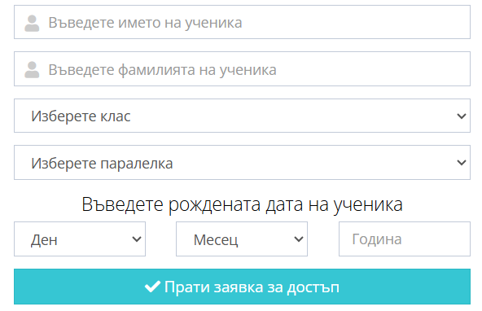
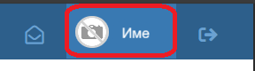
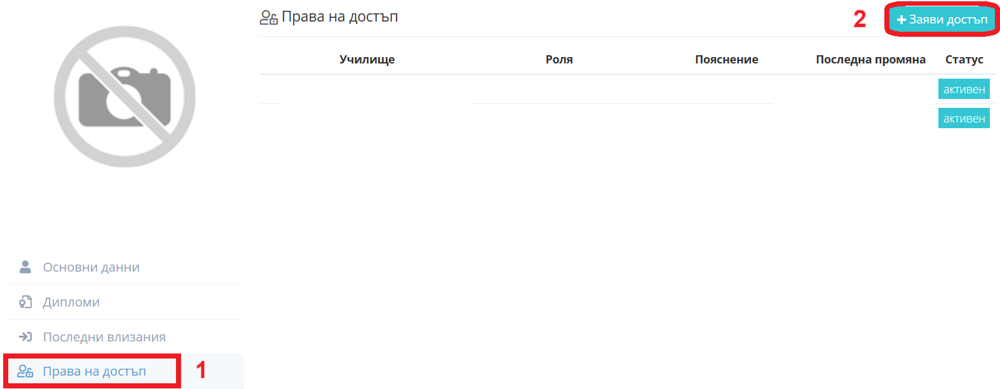
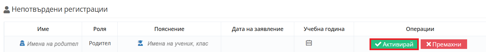
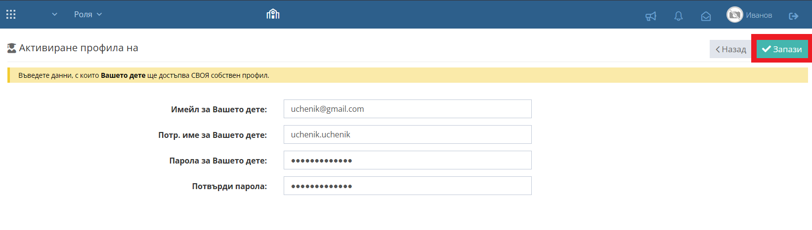
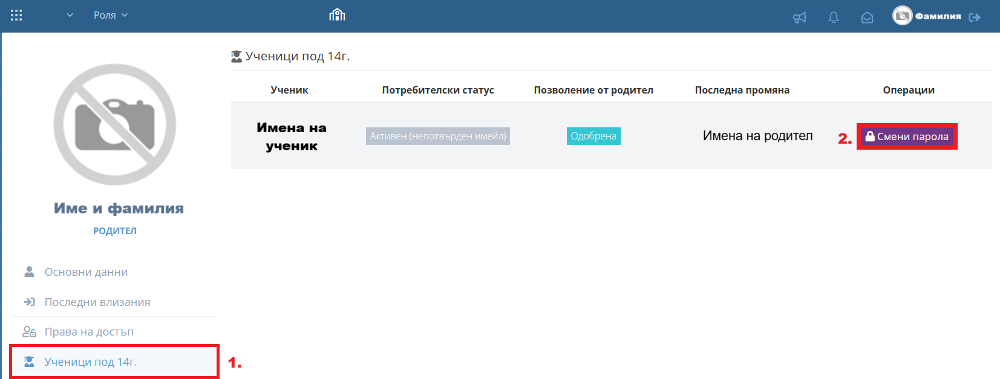

________________________________________________________________________________________________________________________________
1. Родителят си създава профил в Школо |
_______________________________________________________________________________________________________________________________|
Link за регистрация в Школо
- Добавяне на телефонен номер -> Въвеждане на 6-цифрен код, получен като SMS -> Добавяне на данни за родител ->
-> Избор на училище -> Избор на роля -> Избор на ученик (име, фамилия, клас, паралелка, рожденна дата) ->
-> Прати заявка за достъп

________________________________________________________________________________________________________________________________
При налична регистрация за друго дете или учителска роля се добавя от меню в профила: |
_______________________________________________________________________________________________________________________________|
- Вписване с профил в shkolo.bg -> Ляв бутон на мишката върху име на потребителя (горе в дясно)->


- Права за достъп -> Заяви достъп:
-> Избор на училище -> Избор на роля -> Избор на ученик (име, фамилия, клас, паралелка, рожденна дата) ->
-> Прати заявка за достъп
Подробна инструкция за добавяне на второ дете в Школо
________________________________________________________________________________________________________________________________
2. Класният ръководител активира профила на родителите |
_______________________________________________________________________________________________________________________________|
shkolo.bg -> Вписване с профил на класен ръководител в Школо ->
- Администрация
- Нови регистрации -> Проверка за коректност на данните на родителя (имена, телефонен номер, съответствие с ученик) ->
- Активирай

Подробна инструкция за активиране на родителски профил в Школо
________________________________________________________________________________________________________________________________
3. Родителят се вписва с активирания профил и от своя страна активира профила на ученика |
_______________________________________________________________________________________________________________________________|
*Отнася се за ученици до 14 годишна възраст, които нямат право сами да активират профила си
shkolo.bg -> Вписване с профил на родител
- Дневник -> Име на ученик -> Активирай
- натискане върху името на ученика
- задаване на имейл адрес (различен от този на родителя)
- задаване на потребителско име (различно от това на родителя)
- задаване на парола (главна буква, малка буква и символ)

- Готово! Профилът е създаден и активиран и сега родителят ще има достъп до всички данни на ученика.
Инструкция за активиране на ученически профил в Школо
________________________________________________________________________________________________________________________________
4. Смяна на забравена ученическа парола от родител |
_______________________________________________________________________________________________________________________________|
- Вписване с родителски профил в shkolo.bg -> Профил (горе в дясно) -> Ученици под 14 г. -> Смени парола -> Запази

- Готово! Паролата е сменена успешно.